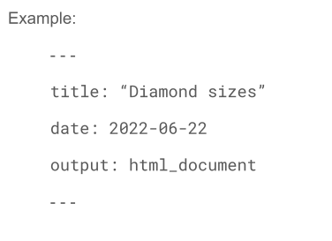
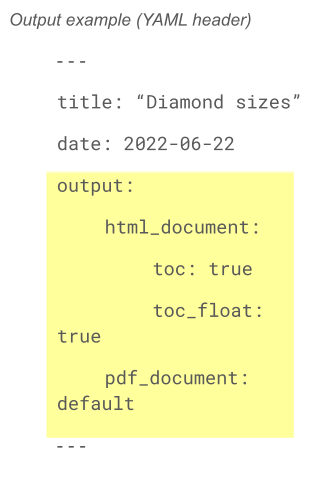
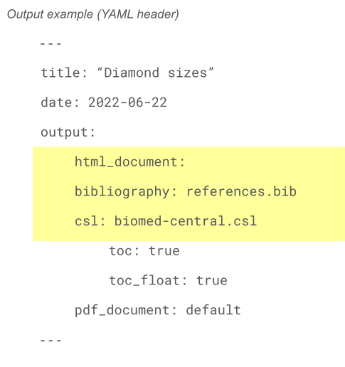

Communication with Stakeholders
LAW Module 4: Conceptual Overview
Welcome to Learning Analytics Workflow
Learning Analytics Workflow is designed for those seeking an introductory understanding of learning analytics using basic R programming skills, particularly in the context of STEM education research.
It consists of consists of four modules. Each module of LAW includes:
- Essential readings
- Conceptual overview slidedeck
- Code a-long slidedeck
- Case study activity that correlates with the Learning Analytics workflow
- Optional badge activity
Module 4 Objectives
- Fundamentals of Data Visualization:
- Learners will grasp the basic concepts and significance of data visualization in distilling complex educational data into comprehensible and actionable insights.
- Variety of Visualization Techniques:
- Participants will be able to identify and apply different types of visualizations, such as charts, graphs, and heatmaps, to represent educational data effectively.
- Practical Application and Best Practices:
- Learners will gain insights into real-world applications of data visualization in education and learn best practices to enhance the clarity and impact of their visual data presentations.
Essential readings:
- Learning Analytics Goes to School, (Model/Communicate Ch. 3, pp. 49 - 59) By Andrew Krumm, Barbara Means, Marie Bienkowski
- R for Data Science, (Ch. 28 & 29) by Hadley Wickham & Garrett Grolemund
- Optional readings in folder
Discussion
Who are some of the stakeholders that you communicate your findings?
What experiences have you had with communicating the results of data analysis and how did you communicate these findings?
What are some things you are normally asked to communicate? What types of products must you produce?
Communicating Effectively with Stakeholders
Data Storytelling
“Data storytelling is a method of communicating information that pairs data with visualization and narrative tailored to a particular audience” (Anderson, 2020).
Education stakeholders:
- Administrators
- Teachers
- Other practitioners
- Students & their families
More Points
- Tell a story (characters, setting, conflict, resolution)
- Use “signposts”
- Explain the data and why it matters
- Add graphs and visualizations (but not too much!) to enhance understanding
- Make it possible to dig deeper
Communicating Your Message with R Markdown
Supports many output formats, including:
PDF
Html
Word
Slideshows
Designed for communicating with:
Decision makers
Other data scientists
Future you
- Plain text file with extension .rmd
- Code and its output appear together in the file/report
- Contains 3 types of content:
- YAML (optional)
- Chunks of R code
- Text with simple formatting text
- Use
knitto produce a complete report
An optional header that gives instructions for “whole document” settings
This example demonstrates controls for title, date, and output format

Default table formatting in R Markdown is same as what appears in console. Add formatting with knitr::kable function. For additional customization, see help within the IDE with ?knitr::kable.
Additional packages allow for further customization:
xtablestargazerpandertablesasci
Formatting for your Audience
There are two ways to set the output of a document:
Permanently, by modifying the YAML header
Transiently, by calling
rmarkdown::render()
Useful if you want to produce multiple types of output
When you knit, R will automatically put output indicated in the YAML header, but you can choose something different from the dropdown menu beside the knit button

Output options include:
- Word:
word_document - OpenDocument text:
odt_document - Rich Text Format:
rtf_document - Markdown:
md_document - GitHub:
github_document - PDF:
pdf_document
- Built in formats
- HTML with ioslides:
ioslides_presentation - HTML with W3C Slidy:
slidy_presentation - HTML:
xarnigan_presentation - PDF with LaTeX Beamer:
beamer_presentation
- HTML with ioslides:
- New slides begin at each first (#) or second (##)
- A horizontal rule (***) used to create slide without a header
- Specify a bibliography file (i.e.,
bibliography:rmarkdown.bib) - use @ and citation identifiers from articles (e.g., [@smith04; @doe99])
- Change style with citation style language (CSL) (e.g.,
csl:apa.csl)

Ethical Considerations in Learning Analytics
Data privacy
Bias in data analysis
Student consent
Responsible data usage
Inclusive practices
Transparent communication
Continuous evaluation
Discussion
What do you think are currently import ethical considerations for LA?
How can educational institutions balance the need for data-driven decision-making with the ethical considerations of data privacy?
How can educators ensure that student data is collected, stored, and used responsibly while still enabling personalized learning experiences?
What’s Next?
- Complete the Communicate part of the case study
- Complete the Data Products badge
- Optional: Complete the LAW Microcredential